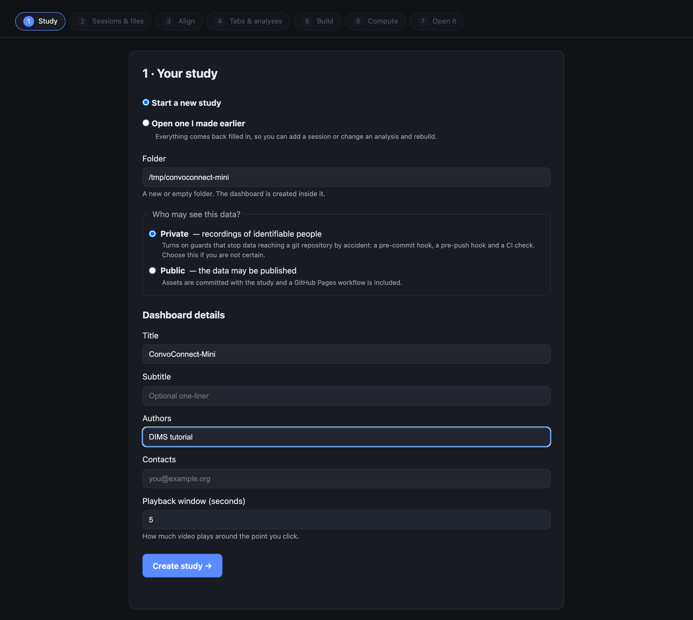
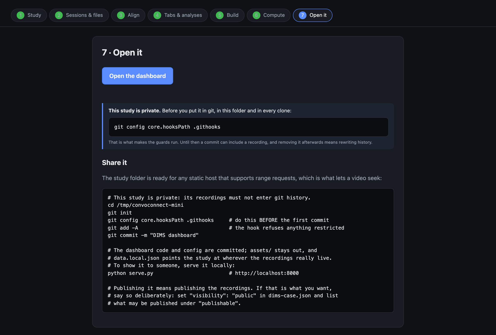
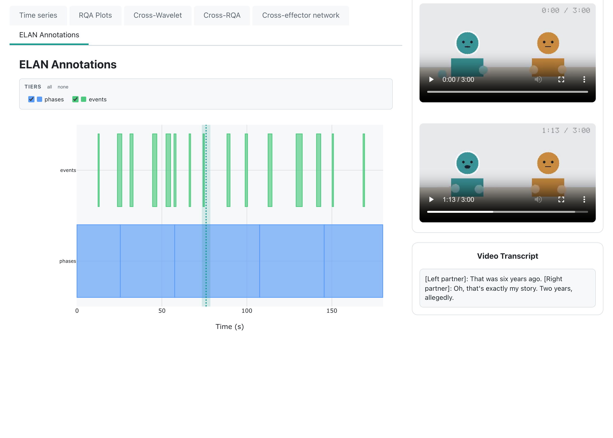
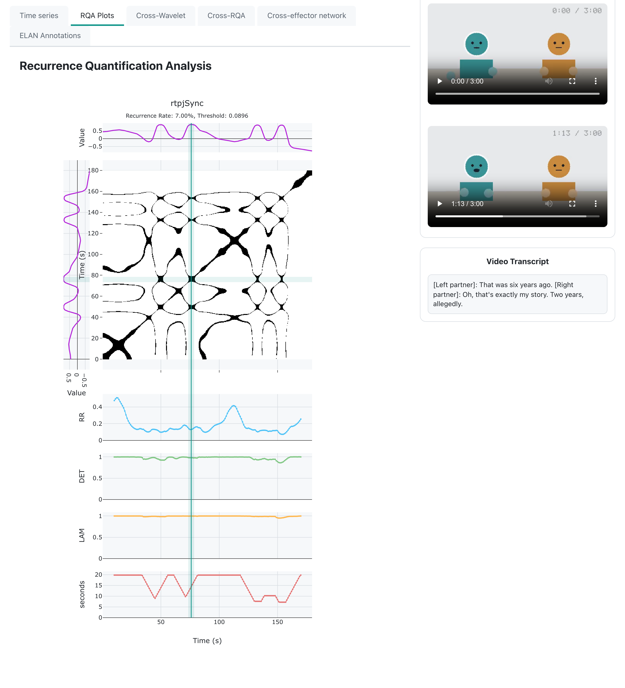
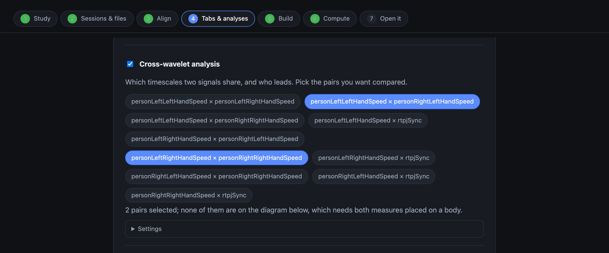
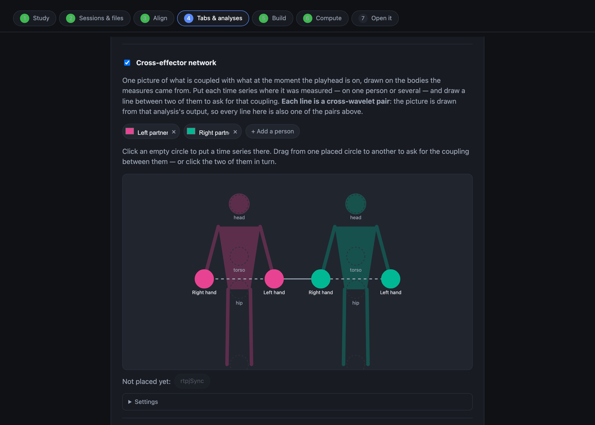
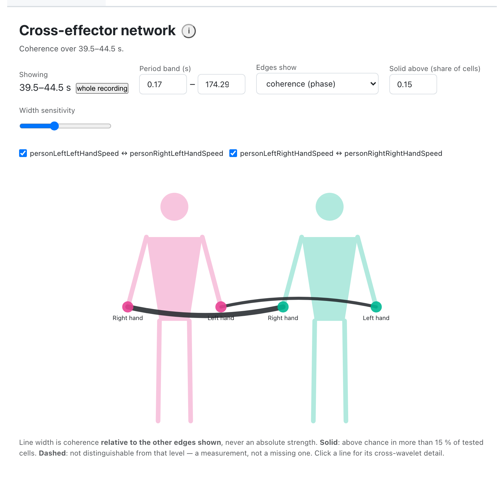

From data to a dashboard¶
In this tutorial, we'll use the no-code builder to set up your DIMS dashboard from scratch — no programming, no JSON files, no renaming files by hand. Bring your own recordings, or press one button for an example study if you don't have any yet; either way you'll have a working dashboard by the end. The four analyses DIMS can run are at the end of the page, one section each — take them one at a time, or not at all.
The example study¶
ConvoConnect-Mini
Two pairs of strangers, three minutes of conversation each, everything synthetic. Step 2 generates it at the press of a button — use it if you have no data of your own yet, and to follow the times and values quoted below.
Each pair — dyad01 and dyad02 — has the four things
any DIMS study is built from, all on one clock: a video of the
conversation, measurements over time, a transcript, and ELAN
phase codes. That is all the tutorial below needs.
The measurements are five: the speed of each partner's left and right hand, and
one belonging to the pair rather than to either of them — rtpjSync,
how closely their brains are tracking each other. The optional sections at the
end of this page reach for those: the hands for anything comparing two signals,
rtpjSync for anything looking at one. It's modelled on the first
case study in the DIMS paper, where a rise in inter-brain synchrony isn't the
finding but the question: you go back to the video and the transcript to
see what kind of moment it was.
| Pair | What happens | Why it is in the example |
|---|---|---|
| dyad01 | Two people who click almost immediately. | Four synchrony peaks, each on a moment you can name. |
| dyad02 | A conversation that never gets going. | Synchrony sits near zero and its biggest peaks land on nothing — and its video is 12 s longer than its data, so step 3 has something to fix. |
None of it is a recording, and none of it ships with the builder: the signals, the video and the annotations are generated together from one conversation script the first time you ask for them, which is why they agree with each other.
Before you start¶
Python 3.10–3.12
A free, one-time install from python.org. On 3.13 everything works except motion capture from video.
The repository
dims-network/dims — clone it, or download the ZIP and unzip it.
About 10 minutes
Most of it yours; step 6 is about half a minute on the basic path. The optional analyses at the end say what they add.
No internet, after the install
Everything after the first launch runs on your own machine. Your data never leaves it.
Step by step¶
Here's the whole process, one step at a time.
-
Start the builder
Open the
apps/builder/folder and double-click the launcher for your machine. It installs what it needs the first time — that takes a minute or two — and then opens the wizard in your browser.- macOS:
run.command - Windows:
run.bat - Linux:
run.sh
macOS, first time only: if you see “Apple could not verify ‘run.command’ is free of malware.”, click Done — not Move to Trash — then open System Settings → Privacy & Security, scroll to Security, and click Open Anyway. This is macOS flagging any downloaded unsigned script, and it happens once.
The wizard opens on step 1. The seven steps across the top are the whole job — you can click back to any of them at any time. - macOS:
-
Step 1 · Your study
Three things to fill in, and one real decision.
- Folder — a new or empty folder. The dashboard is created inside it.
- Who may see this data? — Private is the default and the right answer if you are not certain. It switches on guards that stop recordings reaching a shared code repository by accident. Public means the data may be published, and adds a workflow that puts the dashboard online.
- Dashboard details — a title, optionally a subtitle, authors and a contact address. These appear on the finished dashboard.
Playback window is how much video plays either side of the point you click. Five seconds is a good starting value; you can change it later.
Press Create study →.

Private is the default. The note under it says exactly what that switches on. Coming back later? Choose Open one I made earlier and point it at the same folder. Everything comes back filled in, so adding a session or changing an analysis is a rebuild rather than an edit of a configuration file. -
Step 2 · Sessions & files
Drag your files onto this screen. Everything from one recording goes in together, and the builder works out what each file is from its name and its contents:
What Looks like Needs to be A video session1.mp4One per session. Its name is the session ID, and everything else for that recording is named after it. Measurements
as many as you havesession1_headSpeed.csv
session1_handSpeed.csv
session1_sync.csvOne file per measurement, each a column called Time(any casing) in seconds, ascending — not milliseconds, not frame numbers — plus that one measurement. The part of the filename after the session ID is what the measurement gets called, so it is worth naming them the way you want to read them. One wide spreadsheet works too; see below.A transcript
optionalsession1_transcript.json{ "segments": [ {start, end, speaker, text} ] }, times in seconds.ELAN codes
optionalsession1.eafSaved from ELAN as usual, with one constraint: only time-aligned annotations are drawn. Tiers whose annotations hang off a parent annotation rather than off the timeline — symbolic subdivisions and associations — are skipped, and an .eafwith none of the aligned kind is rejected with a message saying so.The builder groups the files into sessions by that first part of the name, and checks each one as it arrives — so a misnamed file or a
Timecolumn in milliseconds surfaces here rather than as an empty tab at the end. Anything it guesses wrong you can fix in place: which session a file belongs to, and what the measurement is called.Don't have your own data, but want to try DIMS? Press Load the example study. The first press takes a few seconds — it is generated on your machine rather than shipped — and 16 rows appear: two conversations, with their videos, measurements, transcripts and annotations. The rest of this page follows that study, so it is also the way to follow along exactly.
The example study, loaded: sixteen rows across two sessions. Every row says what the builder thinks the file is, and you can correct any of them. One spreadsheet with several measurement columns is also fine — motion tracking usually gives you one. The builder splits it into one file per measure on the way in, because that is the layout every analysis reads.More than one camera? Some studies film a session from several angles. This screen has a collapsed More than one camera per session? panel for naming them, and the dashboard grows a camera selector. This tutorial doesn't cover it — leave that panel closed if each session has one video.Press Next →.
-
Step 3 · Align video & data
The dashboard puts your measurements on the video's clock. If a session's video and its measurements are not the same length, the dashboard shows dead space — video with no data under it, or data running past the end of the video.
This is exactly the kind of problem the example study is here to show you: dyad02's video is 12 seconds longer than its measurements. The preview shows the video track above each measurement track, so you can see the overhang. There are two ways to fix it, and neither touches your original files:
- Trim the video to a window you pick with the two handles — right if the camera was rolling before the session started.
- Pad the measurements with zeros at either end — right if the measurements genuinely cover a shorter part of the recording.
For dyad02, trim the video: the camera was rolling before they sat down. dyad01 already lines up and needs nothing.

The overhang is the 12 seconds. The card's header keeps reporting the session as it stands until you press Apply trim; dragging the handles previews the window, it does not change anything. Trimming writes a trimmed copy at build time — your original video is never modified. This step is the only alignment tool DIMS has. Build a study from a terminal instead and the files have to arrive already lined up — there is no trimming or padding outside the builder. -
Step 4 · Tabs & analyses
Every dashboard shows the video, the measurements and any transcript without being asked. This screen is for everything beyond that, and all of it is optional — so for now, switch on just two things:
- ELAN annotations, so the phases you coded appear on the same timeline. It is a switch: nothing to compute, nothing to choose.
- Recurrence (RQA), and pick the single measure
rtpjSyncfrom the chips underneath it. This is so step 6 has something real to do; what recurrence means is further down this page, and you can come back for it.
Leave cross-recurrence, cross-wavelet and the network alone. Each has its own section below, and each tells you what it costs before you switch it on — cross-wavelet in particular can turn step 6 from a minute into an afternoon.

Every analysis has a Settings panel with the tuning a study is allowed to change. The defaults are sensible; leave them alone the first time. Press Next →.
-
Step 5 · Build
Press Build the study. Your files are copied into place, renamed to the layout the dashboard expects, and the study's configuration is written and checked. It takes a few seconds. Nothing is computed yet.

Sixteen files placed. If something was wrong, this is where it says so, and it names the file. -
Step 6 · Compute
Press Run the analyses. The builder makes a small Python environment just for this study and runs what you switched on, streaming the progress as it goes.
With only recurrence on one measure this is about half a minute — 29 seconds measured, most of it building the environment, which happens once. The status line underneath counts the seconds, because some analyses go quiet for minutes while they work, and a still page is easy to mistake for a stuck one.

You can leave it. When it finishes, the last step lights up. -
Step 7 · Open it
Press Open the dashboard. It opens in a new browser tab, running from your own machine. That is the whole thing built.
The same screen gives you copy-and-paste commands to put it online — GitHub Pages, Netlify or Vercel — if the data may be published. If you chose Private in step 1, publishing is deliberately not a button: it is a decision with a checklist.

Done.
What you are looking at¶
The dashboard, and the one gesture the whole tool is built around.
The video, the measurements, the transcript and your ELAN codes share one clock. Click anywhere on a measurement trace and the video jumps to that moment, with the transcript following along. That's it — that's the tool.

rtpjSync reaches +0.90. The
transcript says why: both of them moved here for a job that was supposed to be
temporary.It's worth trying properly, because this is the paper's whole argument in one gesture. In dyad01, four peaks are worth clicking: 0:49 (+0.89), 1:16 (+0.90), 2:12 (+0.87) and 2:33 (+0.86). Each is a different kind of moment — a joke landing, a mutual disclosure, finishing each other's sentence, and a warm aside near the end. In a static plot they'd all look the same.
Then open dyad02 and do the same, because this is the half that should worry you. Its synchrony sits at zero for most of the conversation, and the one moment where these two actually connect is at 1:50 (+0.70). But its highest peaks are somewhere else entirely: 2:23 (+0.88) on “That's longer than it sounds”, 1:58 (+0.84) on “Exactly”, 1:13 (+0.81) on “What about you?”. Nothing. In a pair who aren't coupled, the biggest peaks land on nothing at all — and they're bigger than the one peak that meant something. Reading a peak without going back to the recording is how that ends up in a paper.
ELAN annotations run along the same timeline as everything else: in the example study, the phases of each conversation — warm-up, the topics, the shared laughter, the closing.

That is the whole basic dashboard. Everything below is optional: four analyses, each in its own section, each saying what it asks of you before you switch it on.
Going further — the analyses¶
Each of these is a switch in step 4 and a tab in the dashboard. Switch one on, press Build again, run step 6 again, and it appears. They are independent, except where a section says otherwise — and they are in the order they make sense to read.
Recurrence (RQA) already on · seconds Where one signal returns to a state it was in before.
You switched this on in step 4, so its tab is already there. A recurrence plot asks a single question of a single signal: at which pairs of moments was it in nearly the same state? Repeated structure shows up as texture — diagonal lines where a stretch of the signal replays a stretch from earlier, blocks where it sat still.
The numbers beside the plot — recurrence rate, determinism, laminarity — depend on the target recurrence rate set in step 4's Settings panel. Two studies compared with each other must use the same value, or the comparison is between two thresholds rather than two conversations.

rtpjSync for dyad01. The texture is the point; the
numbers quantify it.Cross-recurrence (cRQA) adds seconds Where two signals repeat each other, and with what delay.
Switch on Cross-recurrence (cRQA) in step 4. Every pair is selected by
default — it is cheap — so click to drop the ones you don't want. For the
example study, keep personLeftRightHandSpeed × personRightRightHandSpeed:
two people's right hands.
The reason that pair is interesting is turn-taking. People take turns, so their hands take turns, and a lagged relationship puts the structure off the diagonal — the distance from the diagonal is the delay. A conversation where one person consistently follows the other looks different from one where they overlap.

Cross-wavelet adds ~9 minutes Which timescales two signals share, and which one leads.
Switch on Cross-wavelet analysis in step 4 and pick the pairs from the chips underneath. Nothing is chosen for you: five measurements make ten possible pairs, and each is a separate run. For this study, two is plenty:
personLeftLeftHandSpeed × personRightLeftHandSpeedpersonLeftRightHandSpeed × personRightRightHandSpeed
rtpjSync belongs to the pair rather than to either body, so leave
it out of the cross-analyses and read it in the time-series tab, where it earns
its keep.

In the dashboard, warm regions are shared power and the arrows show the lead–lag. The outlined regions are the ones that beat chance.

The cross-effector network needs cross-wavelet One picture of what is coupled with what, following the playhead.
Read the cross-wavelet section first. The network's edges come straight out of the cross-wavelet analysis — either its coherence or its shared power, whichever you pick in the tab — so switching the network on switches cross-wavelet on too, and inherits its cost.
The diagram in step 4 is the one screen that looks unusual. Add a person for each figure, click an empty circle on a body to put a measurement there, then drag from one placed circle to another to ask for the coupling between them — a dashed line follows the pointer. Clicking the two in turn does the same thing. Put each partner's two hands on their own figure and draw the two lines: four hands, two people, two lines, and that's the whole network. Each line is one cross-wavelet pair — the same list as the chips above, shown a second way.

In the dashboard the picture moves with the playhead. A thick solid line beats the 95 % level in enough of the window to be worth reading; a dashed line means the measurement said nothing, which is a result and not a failure. Thickness is relative to the other visible lines — the picture answers “which of these is strongest here”, and the tooltip gives the number.
Two questions, one picture. Coherence asks whether two measures held a steady phase relationship and ignores how much either of them moved; shared power asks whether both were moving at that timescale. Read them against each other: thick in coherence and thin in power is a coupling computed out of stillness, which is the reading to distrust.
rtpjSync, not in the diagram. An
edge tells you two measures moved together, and coordination isn't rapport.
When something is not right¶
| What you see | What it means |
|---|---|
| A file the builder ignored | Its name does not match anything it recognises. Check the extension and that the session ID matches the video's. |
| “No cross-wavelet output was found for this recording” | The network is drawn from cross-wavelet results, so it needs the pairs it draws to have been computed. Reopen the study, check the pairs are still selected in step 4, and rebuild. |
| An empty tab in the dashboard | The analysis behind it was not switched on for those measures in step 4. Reopen the study, switch it on, rebuild. |
| Video and data drifting apart | The Time column is probably in milliseconds, or the video is
a different take from the one the measurements came from. |
| Step 6 taking very long | Expected on long recordings with many pairs. Fewer cross-wavelet pairs is the first lever; fewer surrogates is the second. |
| A network with no lines | Lines come from cross-wavelet pairs. Two measures with no line between them on the step 4 diagram are two circles in the dashboard too. |